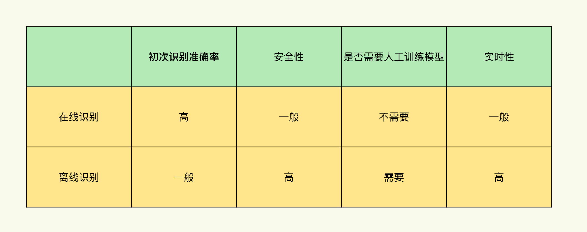
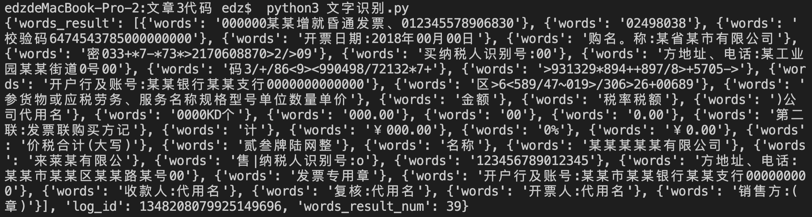
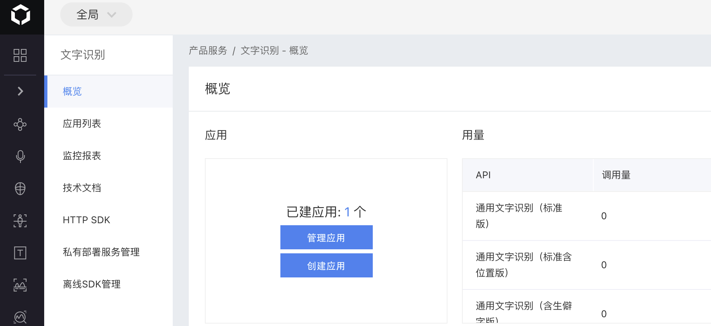
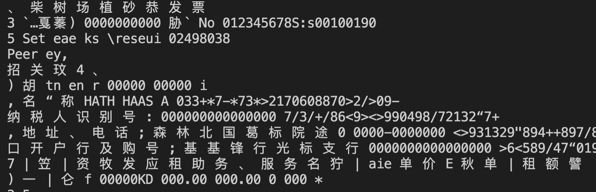
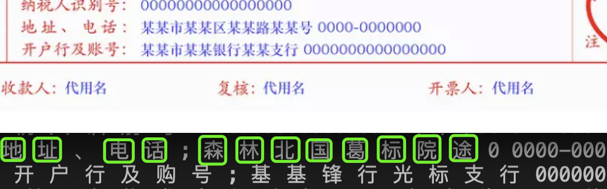
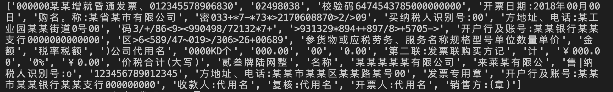

- 00 导读 入门Python的必备知识.md.html
- 00 开篇词 重复工作这么多，怎样才能提高工作效率？.md.html
- 01 拆分与合并：如何快速地批量处理内容相似的Excel？.md.html
- 02 善用Python扩展库：如何批量合并多个文档？.md.html
- 03 图片转文字：如何提高识别准确率？.md.html
- 04 函数与字典：如何实现多次替换.md.html
- 05 图像处理库：如何实现长图拼接？.md.html
- 06 jieba分词：如何基于感情色彩进行单词数量统计？.md.html
- 07 快速读写文件：如何实现跨文件的字数统计？.md.html
- 08 正则表达式：如何提高搜索内容的精确度？.md.html
- 09 扩展搜索：如何快速找到想要的文件？.md.html
- 10 按指定顺序给词语排序，提高查找效率.md.html
- 11 通过程序并行计算，避免CPU资源浪费.md.html
- 12 文本处理函数：三招解决数据对齐问题.md.html
- 13 Excel插件：如何扩展Excel的基本功能？.md.html
- 14 VBA脚本编程：如何扩展Excel，实现文件的批量打印？.md.html
- 15 PowerShell脚本：如何实现文件批量处理的自动化？.md.html
- 16 循环与文件目录管理：如何实现文件的批量重命名？.md.html
- 17 不同操作系统下，如何通过网络同步文件？.md.html
- 18 http库：如何批量下载在线内容，解放鼠标（上）？.md.html
- 19 http库：如何批量下载在线内容，解放鼠标（下）？.md.html
- 20 不同文件混在一起，怎么快速分类？.md.html
- 21 SQLite文本数据库：如何进行数据管理（上）？.md.html
- 22 SQLite文本数据库：如何进行数据管理（下）？.md.html
- 23 怎么用数据透视表更直观地展示汇报成果？.md.html
- 24 条形、饼状、柱状图最适合用在什么场景下？.md.html
- 25 图表库：想要生成动态图表，用Echarts就够了.md.html
- 26 快速提取图片中的色块，模仿一张大师的照片.md.html
- 27 zipfile压缩库：如何给数据压缩&加密备份？.md.html
- 28 Celery库：让计算机定时执行任务，解放人力.md.html
- 29 网络和邮件库：定时收发邮件，减少手动操作.md.html
- 30 怎么快速把任意文件格式转成PDF，并批量加水印？.md.html
- 春节特别放送1 实体水果店转线上销售的数据统计问题.md.html
- 春节特别放送2 用自顶至底的思路解决数据统计问题.md.html
- 春节特别放送3 揭晓项目作业的答案.md.html
- 结束语 和我一起成为10X效率职场人.md.html
- 捐赠
03 图片转文字：如何提高识别准确率？
你好，我是尹会生。
不知道你有没有遇见过这样的场景：在工作中，你遇见了一个紧急情况，对方给你发了一串儿聊天记录的长截图，当你处理完事情想要复盘的时候，必须要把这些记录处理成文字，然后就发现图片转文字过程中会出现很多问题，还需要自己二次手动校对。
经过不断尝试，就发现用互联网上的AI产品可以非常准确地识别出图片中的印刷体文字。而且再通过Python还可以实现把识别到的文字进行格式处理、文件保存等自动化操作。
那么今天，我就给你介绍两种能够精准、快速地把图片转成文字的方式：在线识别和离线识别。我会给你讲解具体的操作方法，当你再遇见这样的需求的时候，就可以很轻松应对了。
图片转文字的两种处理方法
我先来对图片转文字的两种处理方法进行介绍。
目前能够达到较高文字识别正确率的一般分为两种识别方式：一种是文字识别工作都需要在网络侧完成的方式，我们称为在线识别；另一种是不需要互联网功能的，我们称作离线识别。
根据不同的工作场景，我会选择不同的方式实现文字识别。那么，接下来我就带你了解下这两种方式各自的特性。
先看第一种，在线识别的方式。
在线识别方式最大的优点就是，它在初次进行文字识别的时候，准确率非常高。比如对聊天截图中的识别准确率就高达99%。因为在线识别使用了人工智能领域的深度学习算法和文字识别相结合的技术，能够把图片转换成文字后，还能在语义上把相近的字进行二次纠正。
比如说，被识别的内容包含英文单词“Hello”，一旦它的字母“o”被识别成数字“0”，在线识别软件就会根据上下文语境把这类错误纠正回来，而这种二次纠正的功能在离线识别软件中是没有的。
不过在线识别软件也有它的缺点，那就是识别文字的过程需要在公有云的服务器上完成。也就是说需要通过互联网把图片上传到服务器，那么一旦图片过大，或者图片数量比较多，就会导致上传时间过长。我们知道，一张高清图片至少有3MB大小，根据个人的网络情况至少要达到秒级上传才行。这就意味着在大批量文字识别的场景中，或对实时性要求很高的场景下，在线识别是不能满足要求的。
另外，图片需要经过互联网传输，识别以后的图片该怎么保存，怎么销毁，是不是会被其他人得到，这些都是安全风险。总之，信息泄露的风险比较大。所以像公司的合同、财务资料等涉密程度比较高的扫描件，很少使用在线识别。
再看第二种，离线识别的方式。
这种方式在识别过程中不需要连接网络，节省了在线传输图片的时间，适合那些对实时性要求比较高或网络信号比较差的场景。
但是离线识别方式的问题就在于，初次识别文字的准确率比较低，识别完之后必须要经过人工二次纠正才行。所以在前期人工校对，花费的时间相对来说会比较长。
我把它们各自的优缺点做了一张表格，如下：

那接下来，我就带你学习一下这两种识别方式怎样具体实现。
怎么进行在线文字识别？
我们先来看怎么进行在线文字识别。
在线文字识别方式，识别的主要功能的需要放在公有云的服务器中才能实现，所以在代码实现中就要考虑用户验证和图片加密传输问题。
用户验证能确保识别的结果交还给你本人，图片加密传输能确保图片上的信息不会被其他人窃取到。这些功能，各个公有云的AI产品都考虑得非常周全，一般会提供给用户一个扩展库。你要做的，就是安装这些扩展库。
举个例子，百度云的AI产品，你可以在终端下执行这样一个命令来进行安装。
pip install baidu-aip
在这里我使用了百度云提供的在线文字识别产品，它提供了一个baidu-aip的安装包，安装之后提供了AipOcr函数实现用户验证、client.basicGeneral函数实现文字识别功能。代码如下：
from aip import AipOcr
""" 你的 APPID AK SK """
# APP_ID = '你的 App ID'
# API_KEY = '你的 Api Key'
# SECRET_KEY = '你的 Secret Key'
client = AipOcr(APP_ID, API_KEY, SECRET_KEY)
""" 读取图片 """
def get_file_content(filePath):
with open(filePath, 'rb') as fp:
return fp.read()
image = get_file_content('example.png')
""" 调用通用文字识别, 图片参数为本地图片 """
result = client.basicGeneral(image)
print(result)
在这段代码里，实现了三个功能，分别是用户验证、读取图片和识别图片。为了让你更直观地看到效果，我来对一张电子发票的图片example.png进行识别。识别结果如下：

其实识别的准确率是非常高的，基本上没有错误。那接下来我具体给你介绍一下核心代码。
在代码的第一行，我使用了一个AipOcr库。AipOcr是百度云提供给用户的OCR Python SDK客户端，能够让你用Python语言和百度云进行交互。
一般情况下，我们进行用户认证、图片上传至服务器功能，都需要自己编写很多代码，但是使用AipOcr库之后，这些基础功能都被封装好了。你只需要填写三个变量，就能正式进入文字识别的环节了：
- 第一个变量是APP_ID，它用来识别应用；
- 第二个变量是API_KEY，用于识别用户；
- 第三个变量是SECRET_KEY ，用来加密密钥。
当把这三个变量传入AipOcr函数，使用AipOcr函数通过互联网交互后，就可以用来识别用户是不是被授权使用相应的产品，之后就可以把图片加密发送到AI产品的服务器上了。
这些就是所有公有云识别用户的通用做法，我把这个做法整理为三个步骤。
第一步， 安装SDK。代码是：
pip install baidu-aip
第二步，注册用户。
以百度云为例，你需要登录https://ai.baidu.com/网址，以自己的手机为用户名注册一个新的用户。
第三步，申请应用。
成功登录网站之后，你会进入服务控制台界面，然后选择文字识别功能，再新创建一个文字识别类型的应用。创建应用之后，就可以在服务控制台中的应用列表中查看百度云提供的APP_ID、API_KEY、SECRET_KEY 三个变量。
在这三个变量中，APP_ID在百度云的控制台中创建用户之后会自动创建。- 
变量API_KEY与SECRET_KEY是在创建完毕应用后分配给用户的。
在你成功通过服务控制台得到这三个变量之后，就可以把这三个变量回添到代码中的第3-5行，然后去掉“#”开头的注释，这样就可以通过代码完成用户签名和验证功能。
你在掌握它们之后，也可以使用其他的公有云完成类似的用户签名和验证功能。
完成以上三个步骤之后，我们需要把指定路径的图片上传到百度云，通过第12行的get_file_content函数，把图片的路径和名称作为参数传入这个函数之后，再交给client.basicGeneral(image)函数处理，这样就能够完成图片的上传功能了，图片的识别和返回结果都会由AipOcr包自动处理以后放入result变量中。
总结来说，我在代码中实现了单个图片的在线识别文字功能，当你掌握了对单个图片实现文字识别的方法之后, 你就可以通过我们在第二讲学过的的for循环功能，遍历多个文件夹里的多个图片，你可以实现批量图片的识别功能了。
怎么进行离线文字识别？
我们再来看另一种文字识别形式——离线文字识别。被识别的图片同样是example.png这张发票的扫描件，代码如下：
import pytesseract
from PIL import Image
# 打开图片
image = Image.open('example.png')
# 转为灰度图片
imgry = image.convert('L')
# 二值化，采用阈值分割算法，threshold为分割点,根据图片质量调节
threshold = 150
table = []
for j in range(256):
if j < threshold:
table.append(0)
else:
table.append(1)
temp = imgry.point(table, '1')
# OCR识别：lang指定中文,--psm 6 表示按行识别，有助于提升识别准确率
text = pytesseract.image_to_string(temp, lang="chi_sim+eng", config='--psm 6')
# 打印识别后的文本
print(text)
在进行离线识别的时候，有一个现成的文字识别库，那就是pytesseract库，这个库实现了对图片中的文字识别功能。使用pytesseract库，可以自动实现文字的切分和识别功能，识别效果如下：

通过识别结果，你可以发现英文和数字被准确识别出来的正确率是比较高的，达到90%以上。如果是纯英文的图片，识别之后的文字是可以直接使用的。但是在对中文、字母、数字混合的图片识别结果中，中文会出现较多的错误，正确率不足50%，这种情况下就需要人工去对每个字进行一遍纠正。
不过，如果我们想让初次识别的正确率就很高，那能不能实现呢？其实是可以的。不过在这个过程中我们需要花大量的时间把自己工作场景中经常出现的字手工进行纠错，形成新的识别模型。实现起来还是有一定难度的，为了让你更好地评估是不是值得自己优化离线识别软件的识别正确率，我先来带你看一下原理。
对图像进行文字识别的一般过程为5个步骤：- 第一步，图像输入；- 第二步，前期处理，比如二值化，图像降噪，倾斜纠正；- 第三步，文字检测，比如版面分析，字符分割；- 第四步，文本识别，比如字符识别，后期矫正；- 第五步，也就是最后一步，输出文本。
在这5个步骤中，影响识别准确率最大的就是文本识别部分，这部分会受到对文字的标注和算法模型的大小这两个关键因素的影响。既然我们搞清楚了图像识别的步骤和原理，那能不能在保留本地识别的优势前提下，通过在线识别产品来优化离线识别产品的正确率呢？我们来具体分析一下。
首先，我们可以在文字标注方面优化识别正确率。
像身份证识别、票据识别、聊天截图等大部分文字识别场景，这些待识别图片采用了印刷体，每个字的间隔都是固定的，所以我们要想提升准确率，通常的做法是对每个字都进行人工纠错。
当Tesseract再识别到同一个字的时候，就会按照我们纠正过的来识别，那么逐个汉字纠正是离线识别方式提升识别正确率的必要方式，所以已经有高手为你写好了汉字纠正的工具了，它就是 jTessBoxEditorFX软件。
具体来说，这个软件可以把图片中的每个字切割开，并提示哪个方框对应哪个识别的文字，更正为正确的文字之后，就可以把更正的结果进行保存。这个保存好的结果就被称作新训练的模型。

所以整个过程你可以理解成三个步骤：- 第一步，人工观察；- 第二步，对比原始图像；- 第三步，把错误的文字手工纠正为正确的汉字。
比如截图中的“某”字，多次识别错误，当我们人工把这些文字改为正确的“某”字之后，就可以生成一个训练文件，再把训练文件和文字识别的算法合并成新的识别模型。等下次再识别发票的时候，就可以采用新的模型进行识别。所以再次出现“某”字，就可以正确识别了。
这种文字标注对于单一场景非常有效，比如名片、火车票、飞机票、发票、车牌的识别场景，经过手工标注，不断增加样本数量之后，能够让正确率呈对数级别增加。
接下来我们再看一下在算法的模型上，能不能通过在线识别软件来优化离线识别软件。
在线识别软件的模型很大，通常是上百GB的容量，离线识别软件的模型往往只有几十MB，它们之间存在着巨大的差异，模型越大样本数量就越多，类似离线识别软件手工标注的模型一样，巨大的模型让在线识别软件的准确率在第一次识别就会非常高。
如果把在线模型直接放到你的笔记本当中，因为模型庞大，本地计算能力不足，识别的时间甚至超过在线识别的时间，那本地识别就不具有实时性的优势了。所以直接使用在线识别软件的模型方式不适合离线识别软件。
总的来说，由于手工标注和模型大小有限两个因素的影响，离线识别软件的应用场景大部分在企业内部票据识别上面。虽然离线识别中文的效果比较差，但是如果场景单一，在线识别的实时性达不到你的要求，那还是值得投入一部分时间人工标注汉字的。
识别出文字以后，我们就要提取文字内容并保存了。
识别成功后的文字处理工作
通过刚才案例中的识别结果，我们知道识别结果准确率很高，像单张图片已经可以把识别的结果直接保存使用了。不过一旦需要识别的图片比较多，手工操作起来就非常繁琐了，因为识别过程是使用Python编写的程序，后续可以继续利用Python对识别结果进行处理和保存。比如说在线识别的结果：
为了能够提取文本内容，去掉记录分段信息的”word”和 “{ }”，需要对这段文字再加工处理。
如果你仔细观察的话，就会发现这段文字是有一定规律的，它的写法就是Python的基本数据类型“字典”，字典类型会强调一对或多对数据之间的映射关系。为了将识别的文字结果进行保存，我们还会使用另一个基本数据类型“列表”，一般用来表示多段文字的并列关系，为了提取文本内容，我接下来把字典转换成列表就可以实现内容的提取了。
从字典到列表转换的功能怎么实现呢？首先来看一下两种数据类型的定义。
- 字典由花扩号中的KEY和VALUE两部分组成的，它的格式是：{“words”:“1234567” } 。
- 列表由方括号的VALUE组成，可以存放一个，也可以存放多个VALUE，格式是：[“1234567”,] 或[“123”, “abc”]。
观察这两个数据类型不难发现，把字典的VALUE存放到列表里就能实现内容的提取了，如果字典里有多个值，可以使用for循环进行遍历，然后批量提取。对于识别的结果，我们可以采用一段代码进行从字典到列表的转换。代码如下：
info = []
for i in result['words_result']:
info.append(i['words'])
print(info)
经过数据类型的转换以后，我们可以得到处理好的文字内容：

最后，我们把处理好的结果保存至文件就行了。因为类型转换和保存我们都使用Python完成，所以我可以把这部分功能和文字识别功能放在同一个脚本中，避免手工操作。
不过我还要提醒你一下，在实现用户认证、图片上传、文字识别、数据清洗、文件保存的过程中，我们要尽可能实现流程的全自动化，避免中间步骤手工介入，这样可以更高效地提升工作效率。
小结
这节课我给你提供了两种文字识别的方式：在线识别和离线识别。不管哪一种识别方式，它们都需要经过图片输入、图片预处理、文字检测、文字识别和输出这样5个部分来实现完整的文字的识别功能。
但因为实现方式不同，两种方式各有优缺点。在线方式准确率更高、离线方式保密性更强。你需要根据自己的工作场景来选择不同的识别方式。不过不管哪种识别，最后我都建议你用Python对识别后的结果实现数据清洗和保存工作，毕竟减少手工操作才是实现办公效率提升最有效方式。
现在你可以开始动手将自己电脑里存储多年的图片，自动转成文字了。
思考题
在讲离线文字识别的时候，我只讲了单张图片转换文字的操作方法。如果是多张图片呢？该怎么实现呢？我建议你使用第二节课学过的for循环来进行操作。
欢迎把你对今天这节课的思考和想法分享在留言区，我们一起交流讨论。也欢迎你点击“请朋友读”，我们一起提高工作效率。
编辑小提示：专栏的完整代码位置是https://github.com/wilsonyin123/python_productivity，可点击链接下载查看。或者通过网盘链接提取后下载，链接是: https://pan.baidu.com/s/1UvEKDCGnU6yb0a7gHLSE4Q?pwd=5wf1，提取码: 5wf1。
© 2019 - 2023 Liangliang Lee. Powered by gin and hexo-theme-book.